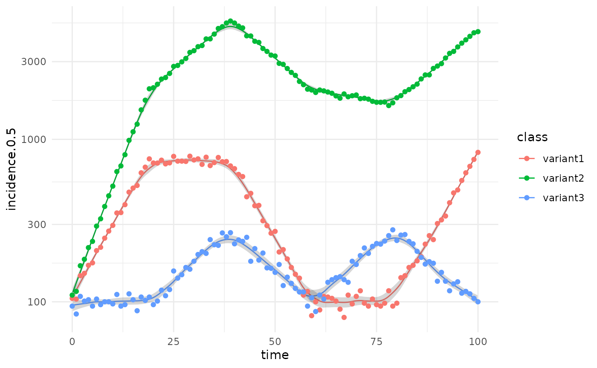

estimators-example.Rmd
data = .test_data()
tmp = data %>% estimate_poisson_rate(window=7*8, deg = 1)
ggplot(tmp,ggplot2::aes(x=date,y=incidence.0.5, ymin=incidence.0.025, ymax=incidence.0.975))+
ggplot2::geom_line()+
ggplot2::geom_ribbon(alpha=0.2)+
ggplot2::geom_point(mapping=ggplot2::aes(x=date,y=count), data=data, colour="red",inherit.aes = FALSE)+
ggplot2::geom_line(mapping=ggplot2::aes(x=date,y=rate), data=data, colour="red",inherit.aes = FALSE)
ggplot(tmp,ggplot2::aes(x=date,y=growth.0.5, ymin=growth.0.025, ymax=growth.0.975))+
ggplot2::geom_line()+ggplot2::geom_ribbon(alpha=0.2)+
ggplot2::geom_line(mapping=ggplot2::aes(x=date,y=r), data=data, colour="red",inherit.aes = FALSE)
data2 = .test_multinomial()
#> classes defined: class=class
tmp2 = data2 %>% estimate_poisson_rate(window=7*8, deg = 1)
ggplot(tmp2,ggplot2::aes(x=date,y=incidence.0.5, ymin=incidence.0.025, ymax=incidence.0.975, colour=class, group=class))+
ggplot2::geom_line()+
ggplot2::geom_ribbon(alpha=0.2, color=NA)+
ggplot2::geom_point(mapping=ggplot2::aes(x=date,y=count, group=class), data=data2, colour="red",inherit.aes = FALSE)
ggplot(tmp2,ggplot2::aes(x=date,y=growth.0.5, ymin=growth.0.025, ymax=growth.0.975,colour=class,groups=class))+
ggplot2::geom_line()+ggplot2::geom_ribbon(alpha=0.2, color=NA)+
ggplot2::geom_line(mapping=ggplot2::aes(x=date,y=r, group=class), data=data2, colour="red",inherit.aes = FALSE)
tmp3 = data2 %>% dplyr::select(-total) %>% estimate_binomial_proportion(window=7*8, deg = 1)
#> using the quicker inaccurate method
#> using the quicker inaccurate method
#> classes defined: class=class
data3 = dplyr::bind_rows(
data2 %>% dplyr::select(date,r,class) %>% tidyr::pivot_wider(names_from = class, values_from = r) %>%
dplyr::mutate(r_diff = variant2-variant1) %>% dplyr::mutate(class="variant2"),
data2 %>% dplyr::select(date,r,class) %>% tidyr::pivot_wider(names_from = class, values_from = r) %>%
dplyr::mutate(r_diff = variant1-variant2) %>% dplyr::mutate(class="variant1")
)
ggplot(tmp3,ggplot2::aes(x=date,y=relative.growth.0.5, ymin=relative.growth.0.025, ymax=relative.growth.0.975,colour=class,group=class))+
ggplot2::geom_line()+ggplot2::geom_ribbon(alpha=0.2, color=NA)+
ggplot2::geom_line(mapping=ggplot2::aes(x=date,y=r_diff, group=class), data=data3, colour="red",inherit.aes = FALSE)+
ggplot2::facet_wrap(dplyr::vars(class))
#> Warning: Removed 132 row(s) containing missing values (geom_path).